Рекрутинговое агентство
Подбираем направление службы по контракту с Минобороны России, помогаем с документами и сопровождаем кандидата до учебного центра.
Посмотреть направленияКак мы работаем
-
Прямо
Срок, статус, должность и выплаты называем до поездки и сверяем по документам, а не на словах.
-
По делу
Смотрим на опыт и навыки кандидата и предлагаем направление, где они пригодятся.
-
Плечом к плечу
Ведём кандидата от первого разговора до учебного центра. На связи с ним и с его семьёй на всём пути.
Говорим коротко. Делаем честно. Доводим до конца.
Направления
Востребованы все военно-учётные специальности. Опыт службы не обязателен: подготовку проходят в учебном центре.
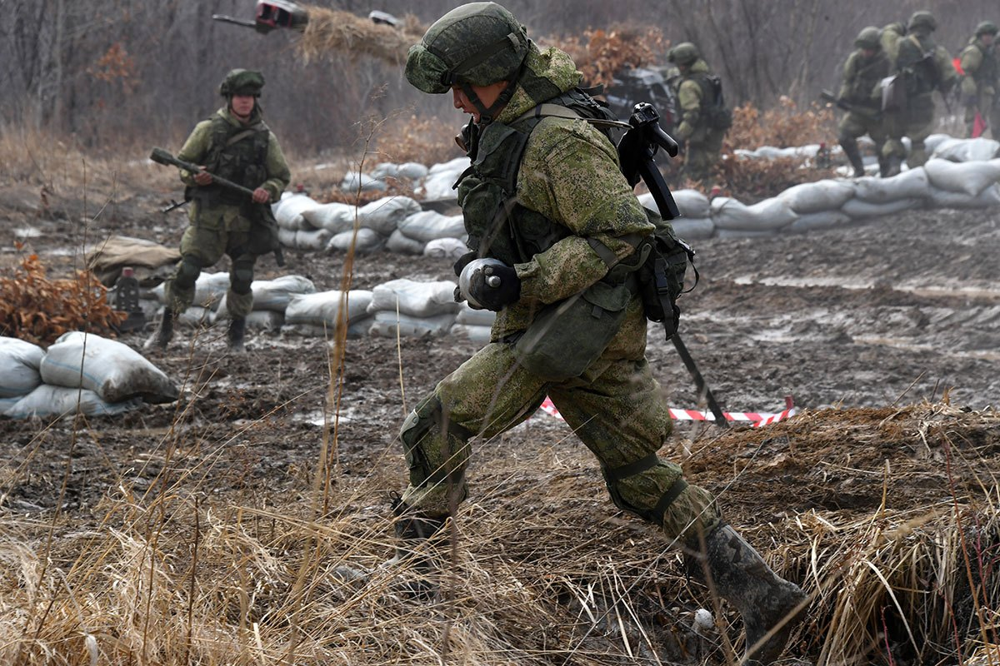
Штурмовики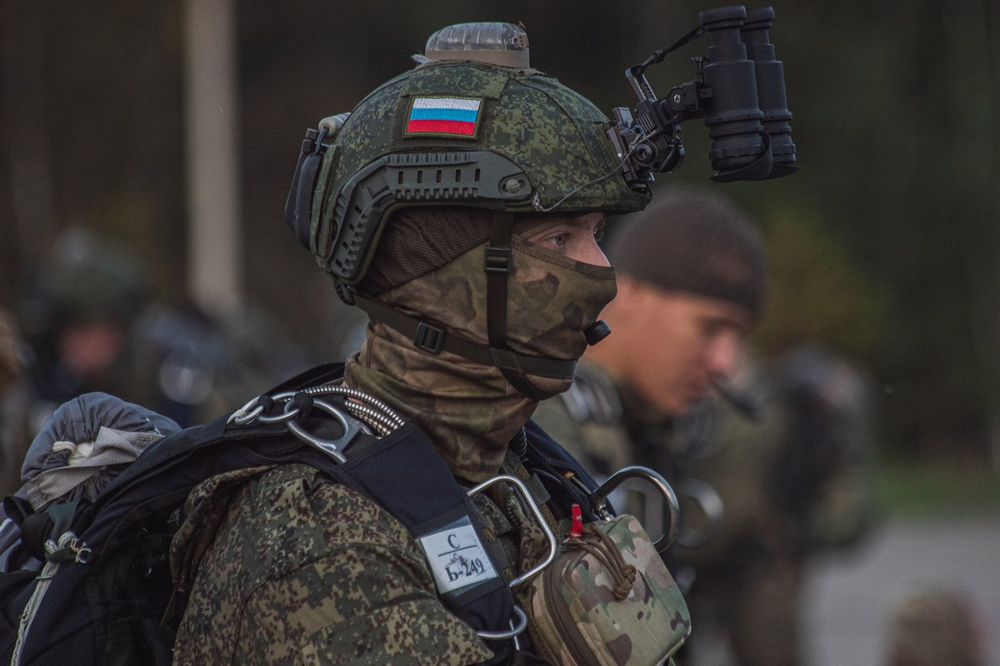
Операторы и техники БПЛА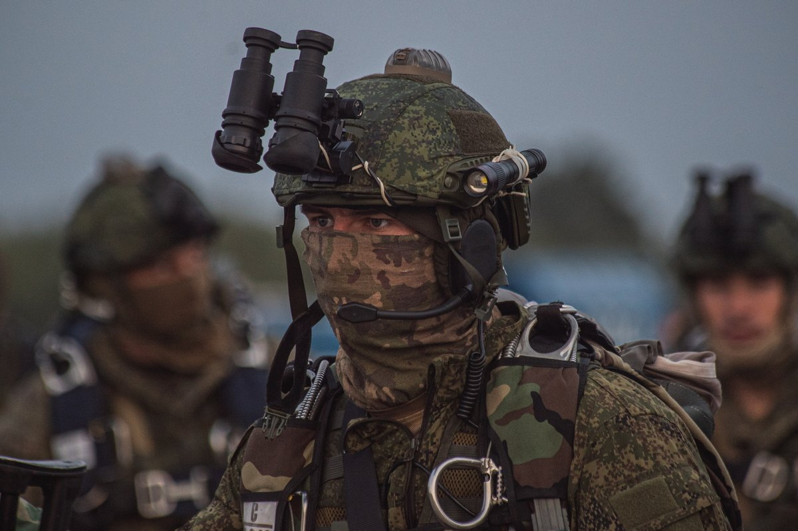
Разведчики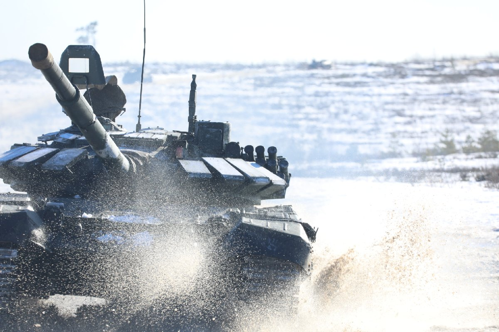
Механики-водители- Водители категорий B–E
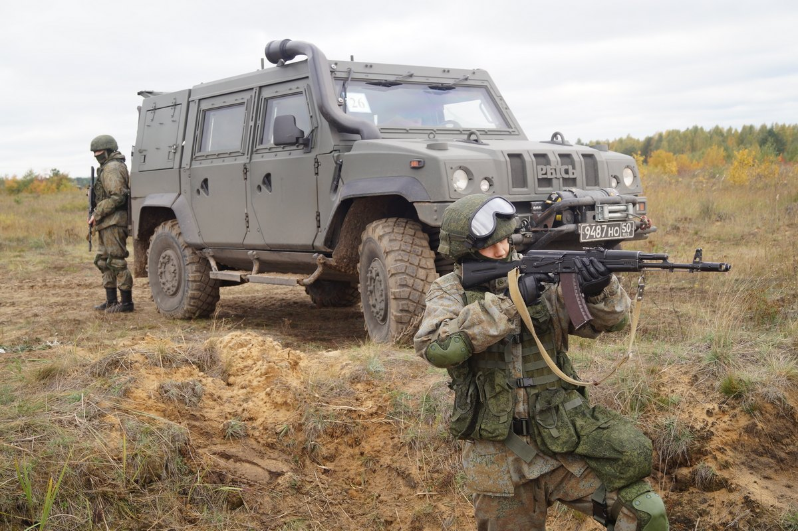
Снайперы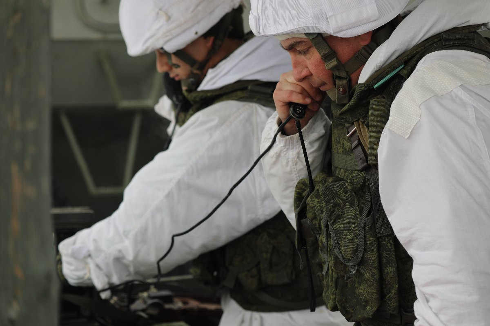
Связисты- Медики
- Сапёры
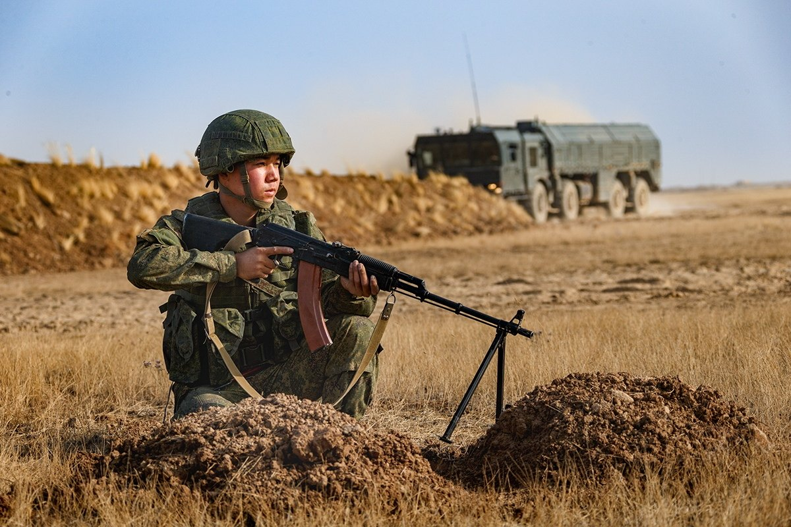
Пулемётчики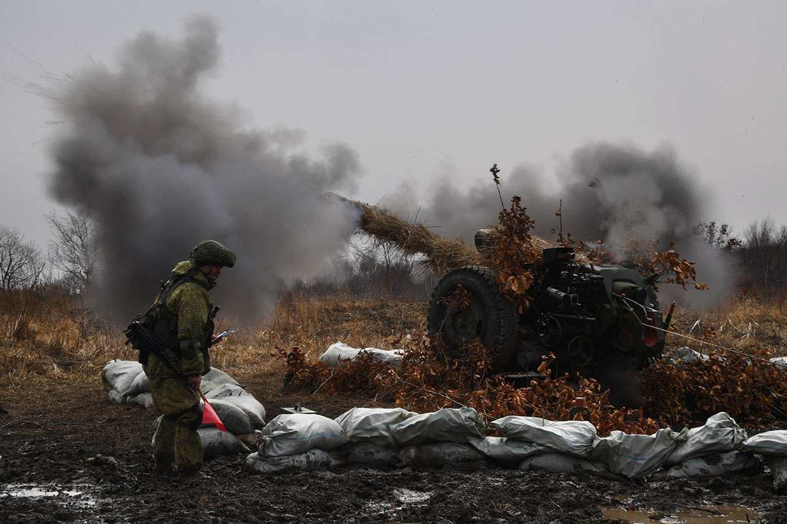
Артиллеристы- Гранатомётчики
Шаг за шагом
Шаг 1 Разговор
Отвечаем на вопросы о службе, сроках и выплатах. Узнаём ваш опыт и пожелания.
Шаг 2 Подбор
Предлагаем направление и подразделение под ваши навыки.
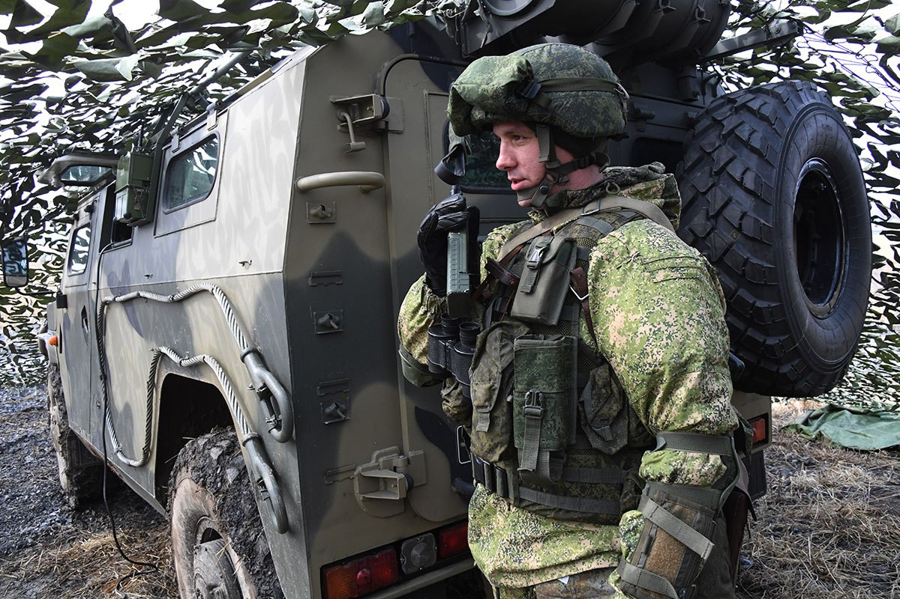
Документы
Паспорт, военный билет, права при наличии. Если что-то утеряно, подскажем, как восстановить.
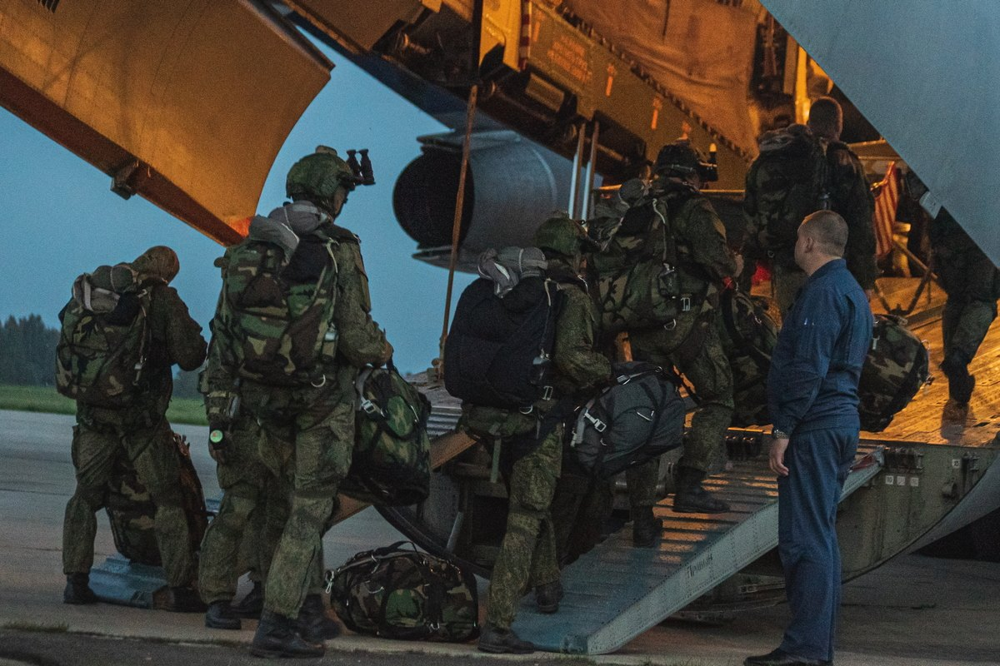
Дорога
Согласуем дату приезда в пункт отбора и помогаем спланировать дорогу.
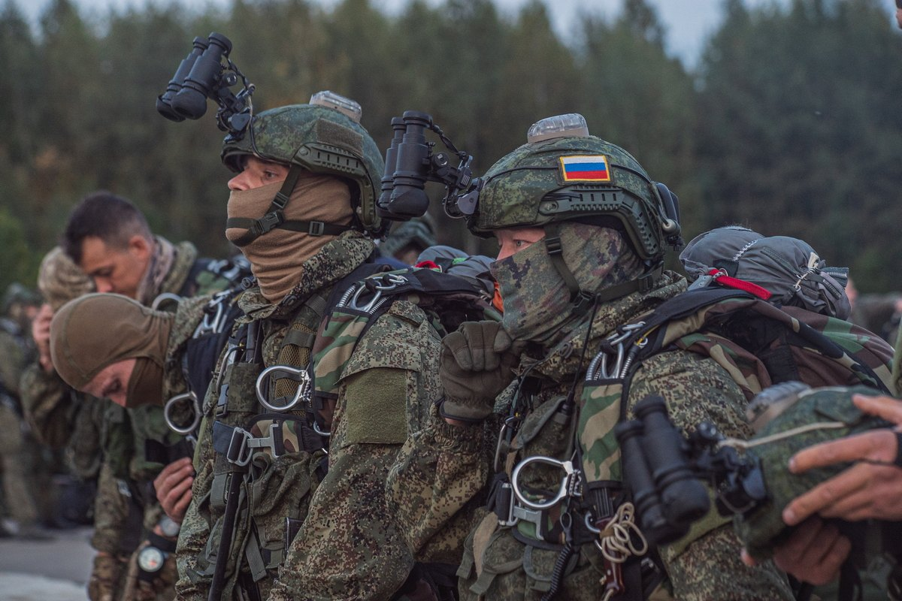
Контракт
Медкомиссия, банковская карта для выплат, подписание контракта на 1, 3 или 5 лет.
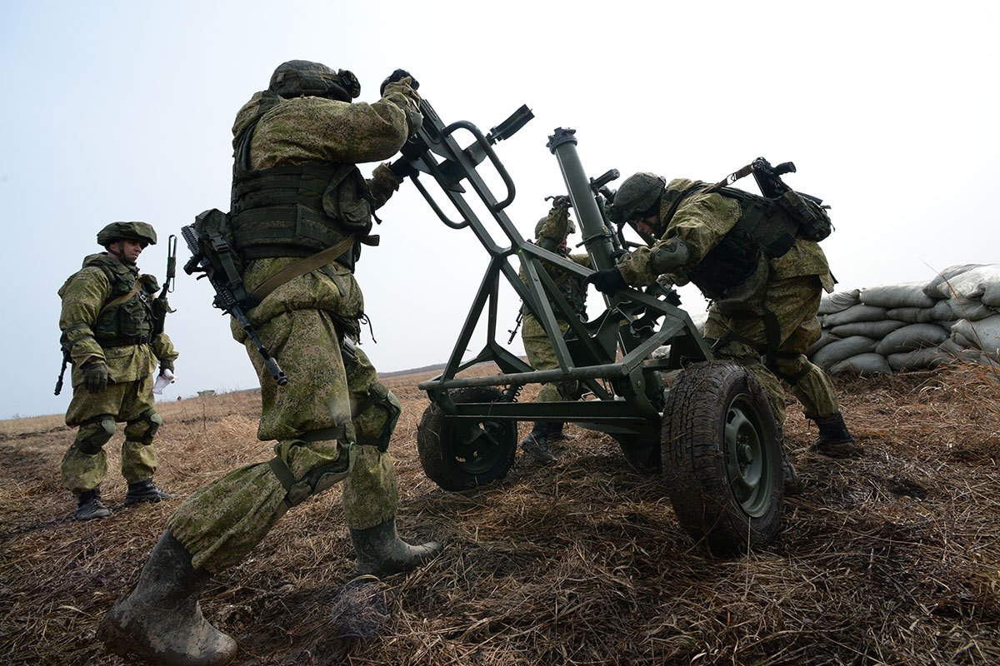
Подготовка
Учебный центр: от двух до трёх месяцев, в зависимости от опыта и специальности.
Вопросы
На какой срок заключается контракт?
На 1 год, 3 года или 5 лет. Срок выбираете вы, разницу объясняем до подписания.
Нужен ли опыт военной службы?
Нет. Кандидаты без опыта проходят подготовку в учебном центре. Опыт и гражданские навыки учитываем при подборе направления.
Какие документы нужны?
Паспорт, военный билет и, если есть, водительское удостоверение. Если документы утеряны, подскажем, как их восстановить.
Сколько платят?
Размер выплат зависит от региона, должности и срока контракта. Точные суммы называем на консультации и показываем, каким документом они установлены.
Спарта
К направлениям